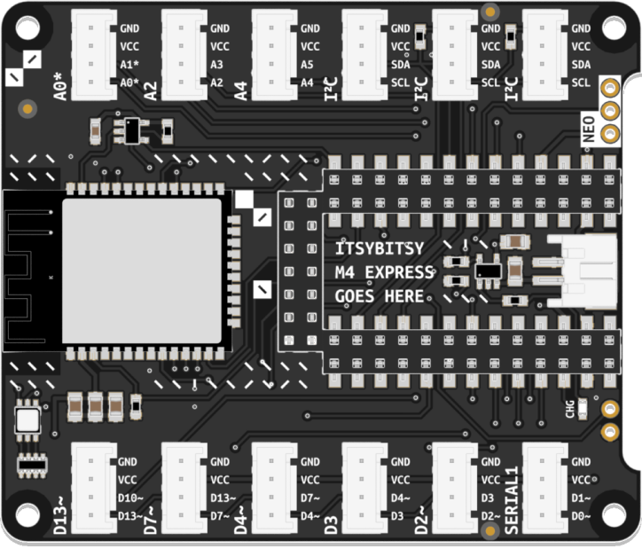
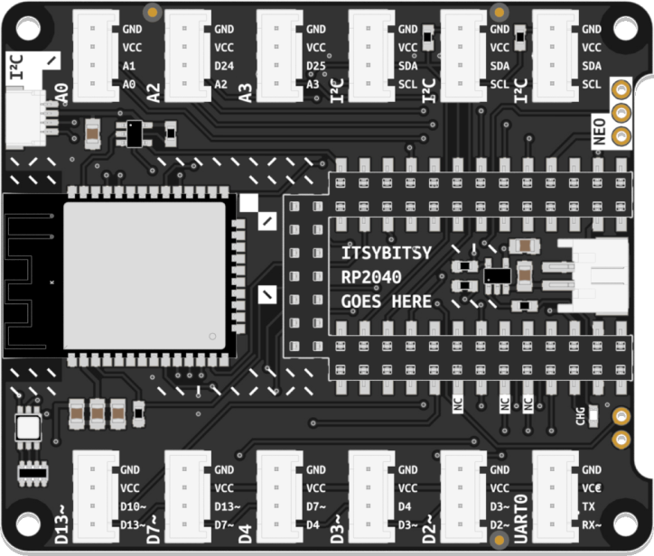
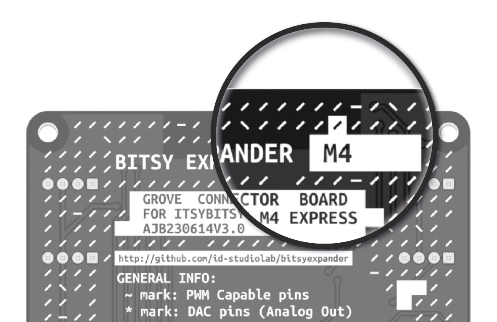

Expands the capabilities of your microcontroller. Provides solderless connectors, WiFi connectivity, battery management, and more.
Your kit includes one of two functionally equivalent versions of the Bitsy Expander, depending on the edition of your Connected Interaction Kit. This page is designed to help you identify which version you own.
| 2022 & 2024 Edition | 2023 Edition |
|---|---|
| Bitsy Expander M4 | Bitsy Expander RP2040 |
|  |  |
| Learn More | Learn More |

The easiest way to identify which Bitsy Expander flavor you own is checking the label on the back of the board. RP2040 or M4 stated on the label indicates the flavor of your Expander. Some M4 Expanders have an empty label (and are also recognizable by the lack of an I²C header at the top).